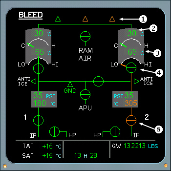

Pneumatic System Displays
Bleed SD
1. USER INDICATION normal indications are a green color. If an amber color and on the ground then both pack flow control valves are closed. If an amber color and in flight, ram air flap is not fully open and both pack flow control valves are closed.
2. PACK OUTLET TEMPERATURE - Displays green. Becomes amber if temperature is high.
3. PACK COMPRESSOR OUTLET TEMP Displays green for normal conditions, becomes amber if temperature is high.
4. PACK FLOW CONTROL VALVE - Indicates valve is fully closed and agrees with commanded switch position (green color). Amber color indicates disagreement with valve commanded position.
|  |
5. ENGINE BLEED VALVE - Amber color indicates disagreement with valve commanded position.